Welcome to Thunk.
A redesign of an app that already worked.
Thunk already let people sign in, track their thought labels and read a weekly summary. These are the screens I started from.
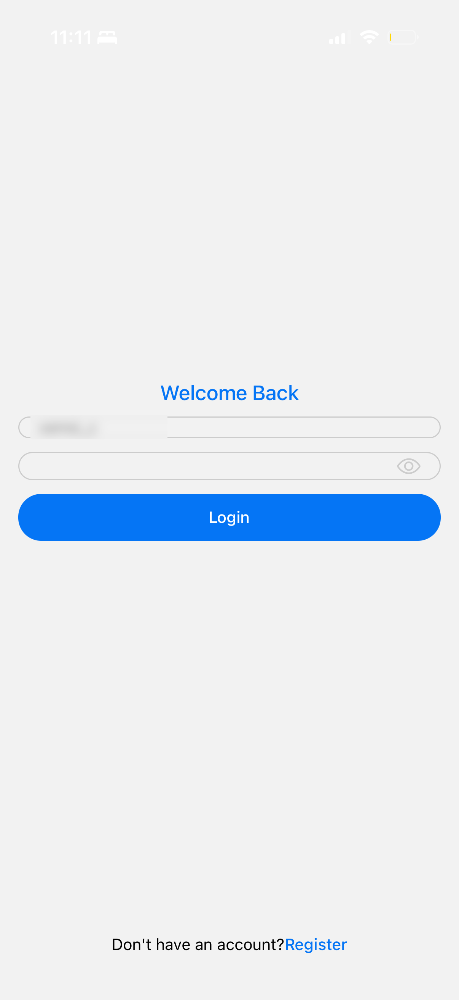

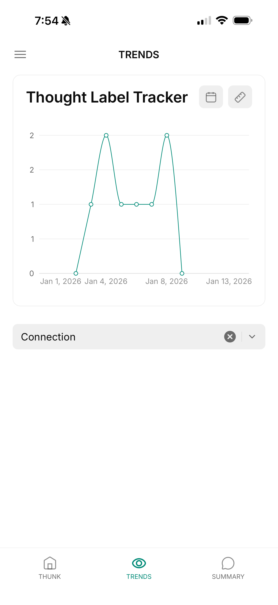
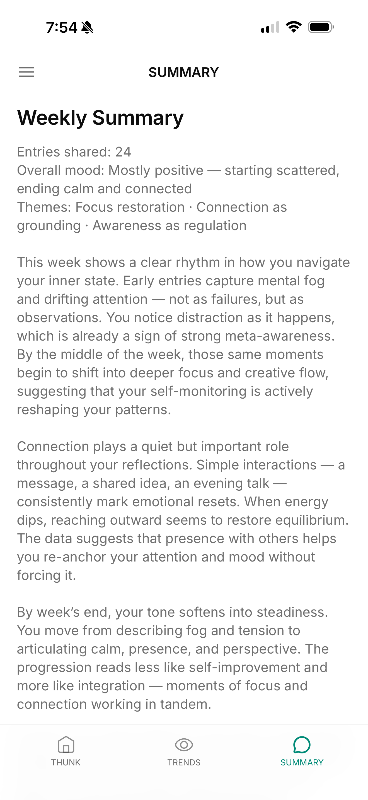
Give it an identity
A logo, a palette and a look of its own, instead of default blue on grey.
Make data readable at a glance
Clear axes, dates and labels, so a week of moods reads in a second.
Give text a hierarchy
Pull the numbers and themes out of the paragraphs so they can be scanned.
Five screens to get started.
Designed and developed 5 onboarding screens with animations and visual assets.
The five core screens.
Designed and developed 5 core app screens (home, trends, history, weekly summary and profile), with tappable journal entries.
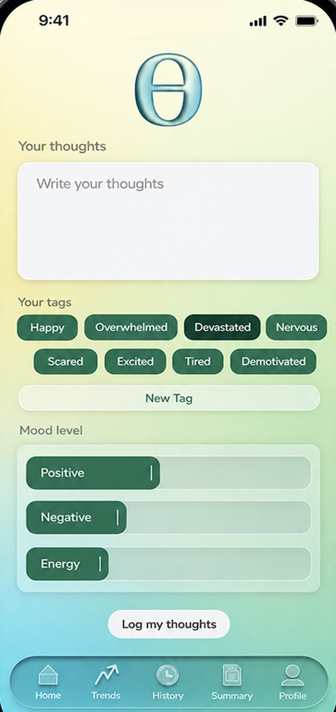
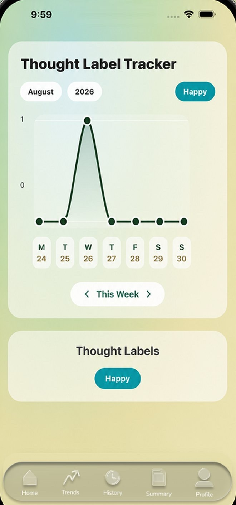
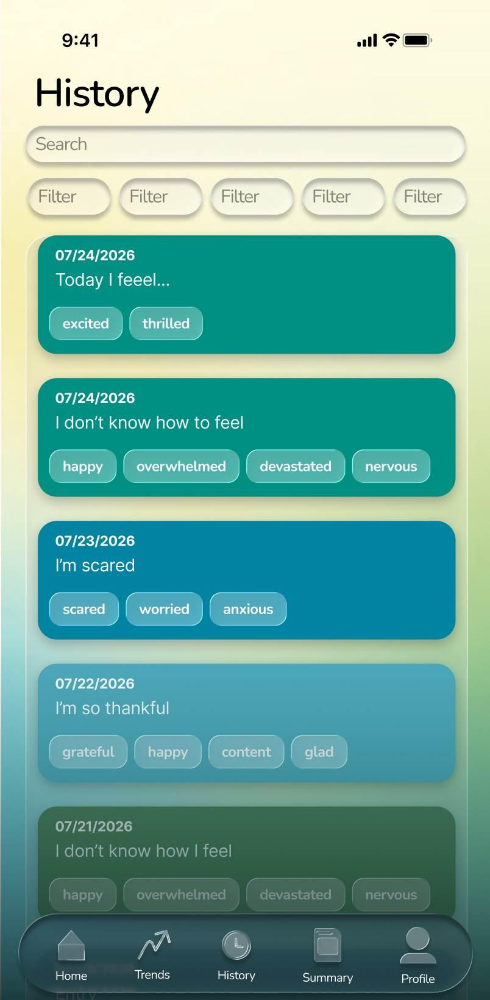
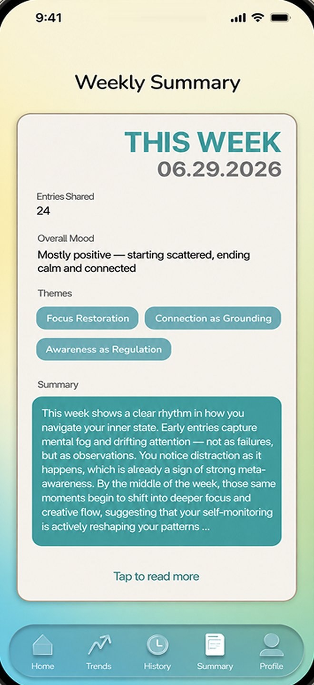
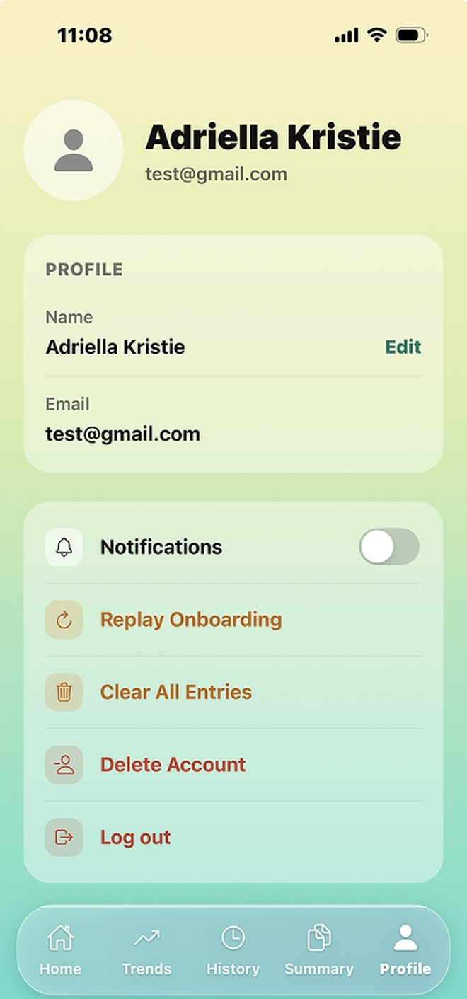
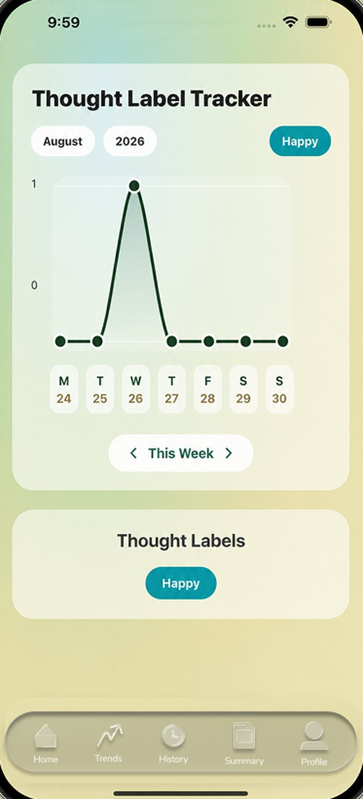
Tracker → Trends
The crowded date axis became a row of weekday chips with a This Week switcher, the month and year became chips you can change, and the axis stopped repeating numbers.
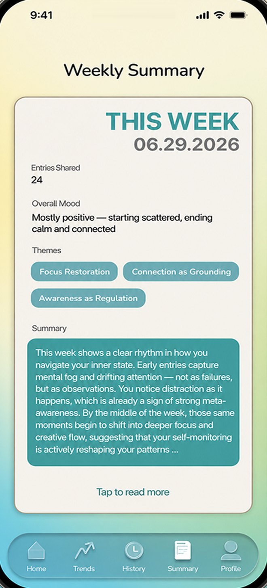
Summary → Weekly summary
Entries and mood became labeled fields, themes became chips, and the long reflection moved into its own card with "Tap to read more".
How it shows up in the App Store.
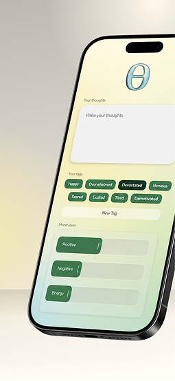
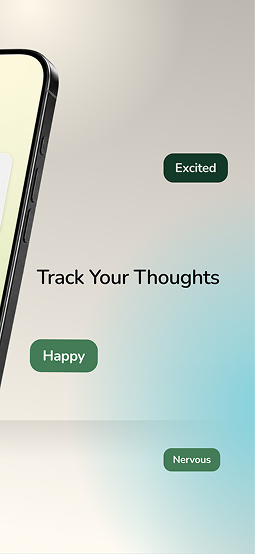
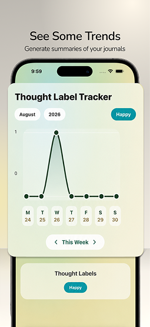
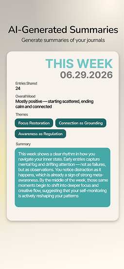
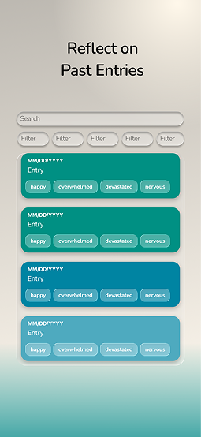
A glassmorphic logo.
The original icon was a flat θ on a gradient. I kept the θ, rebuilt it in glass and made it the new app icon.
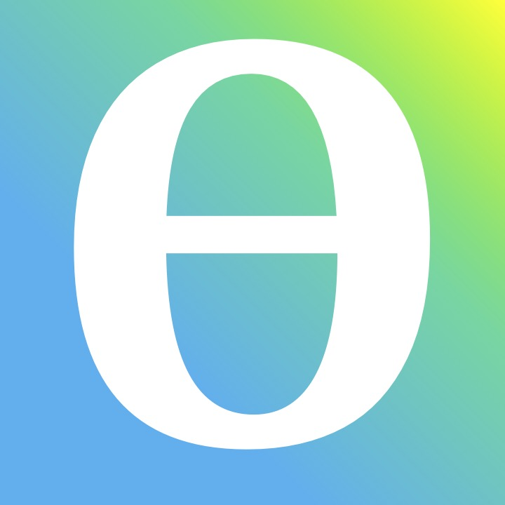
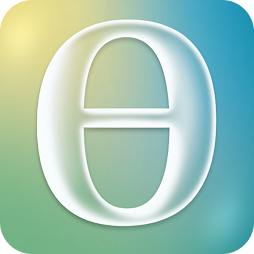
Color palette, themes and UI.
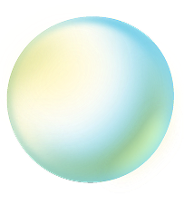